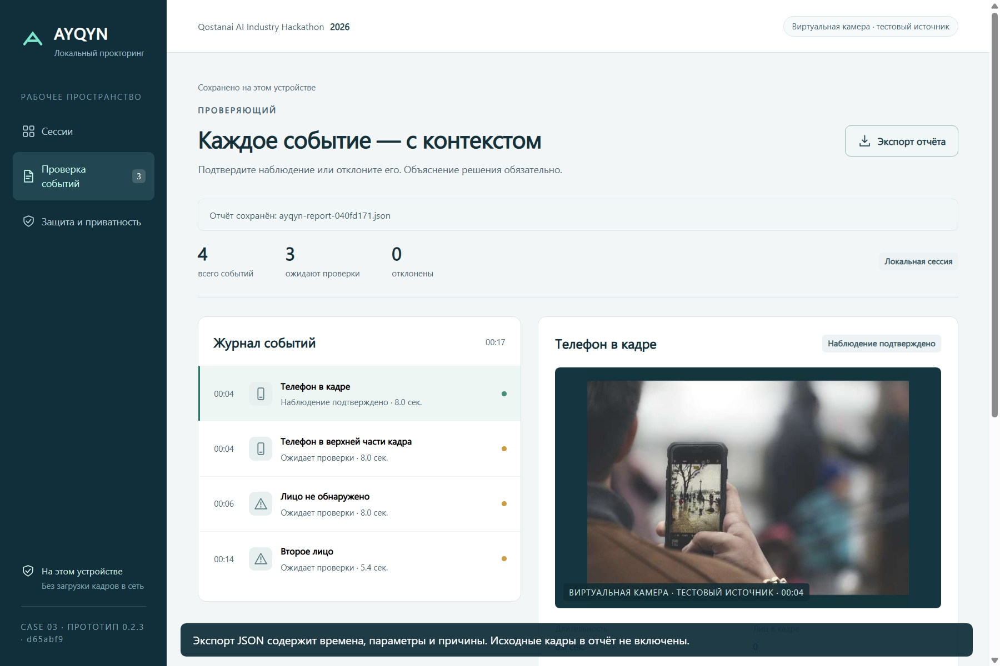
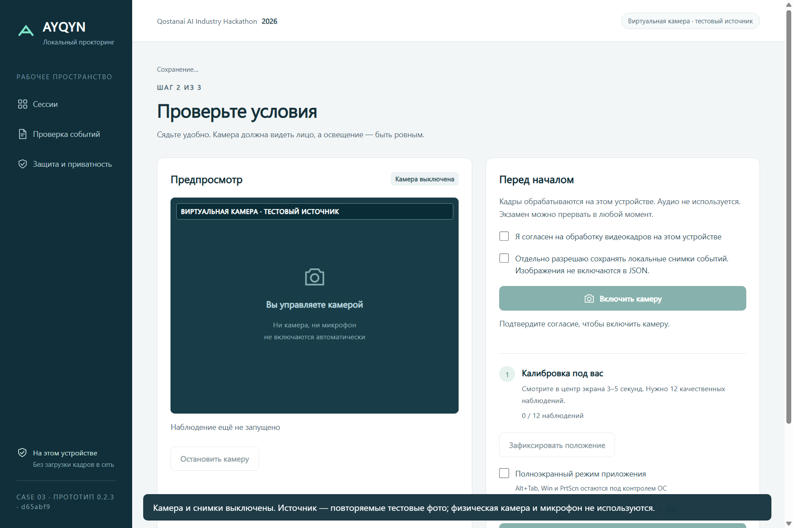
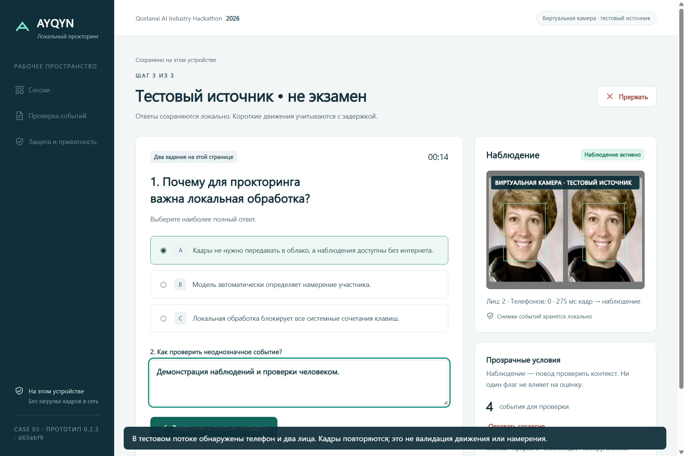

Экзамен —
локально.
Решение —
за человеком.
AYQYN замечает события в кадре и собирает их в понятный журнал. Проверяющий видит контекст и объясняет своё решение.
Скачать приложение Посмотреть демо в браузереБраузерное демо — воспроизведение тестовых наблюдений. Камера и модели работают в приложении.

Событие — повод
посмотреть внимательнее.
Телефон в кадре, поворот головы или второе лицо могут иметь обычное объяснение. AYQYN сохраняет наблюдение; человек подтверждает или отклоняет его с причиной. Флаг сам по себе не влияет на оценку.
Понятный путь
от согласия до отчёта.
Отдельное согласие на камеру и на локальные снимки. Калибровка под положение участника; пороги и задержки задаёт проверяющий. Микрофон не используется.

Модели обрабатывают кадры на компьютере. Короткие движения учитываются с задержкой. Ответы и журнал сохраняются локально; экзамен можно прервать.

Каждое событие можно подтвердить или отклонить только с объяснением. Отчёт JSON содержит время, параметры и причины. Исходные кадры в него не входят.
Все экраны сняты в изолированной тестовой сессии v0.2.3. Фото повторяются; это не проверка точности на движущихся участниках. Нажмите на экран, чтобы рассмотреть детали.
Что видит приложение.
Что решает человек.
Камера и внимание
Телефон в кадре и в его верхней части, отсутствие или второе лицо, длительное отклонение головы и приблизительного направления взгляда.
Положение телефона не доказывает, куда он направлен. Геометрическая оценка взгляда не устанавливает намерение; освещение, очки и ракурс влияют на наблюдения.
Среда экзамена
Ограничения навигации и копирования внутри приложения, наблюдение за потерей фокуса, добровольный полноэкранный режим и аварийный выход.
Alt+Tab, Win и PrtScn остаются под контролем ОС. Прототип не блокирует другие окна во всей системе. Управляемый режим Windows не активирован.
Приватность
Кадры остаются на устройстве. Камера и снимки выключены до согласия; есть удаление сессии и срок хранения. После подготовки моделей экзамен работает без интернета.
Нет аудио, базы идентификации, оценки эмоций или автоматического наказания. Этот сайт не обращается к камере и не собирает аналитику.
Возможности прототипа проверены на тестовых данных. Точность на реальном экзамене ещё предстоит оценить.
Открыть отчёт проверокВаш компьютер.
Ваши данные.
Переносная сборка с моделями внутри. Для работы не нужны Python, аккаунт или платный сервис.
Скачать для Windows- Скачайте ZIP
Файл AYQYN-Windows-v0.2.3.zip, 194 021 562 байта. Ссылка ведёт на опубликованный релиз GitHub.
- Распакуйте всю папку
Запускайте AYQYN.exe рядом с resources и остальными файлами сборки.
- Выберите режим
Начните с воспроизведения тестовых данных или включите свою камеру после отдельного согласия в приложении.
Сборка не подписана цифровым сертификатом. Windows может показать предупреждение. Если запуск ограничен политикой устройства, обратитесь к его администратору.
d3ab1b6b9ff93a59619e59380627cb84a3d338298520b2945493b21a10716013